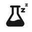
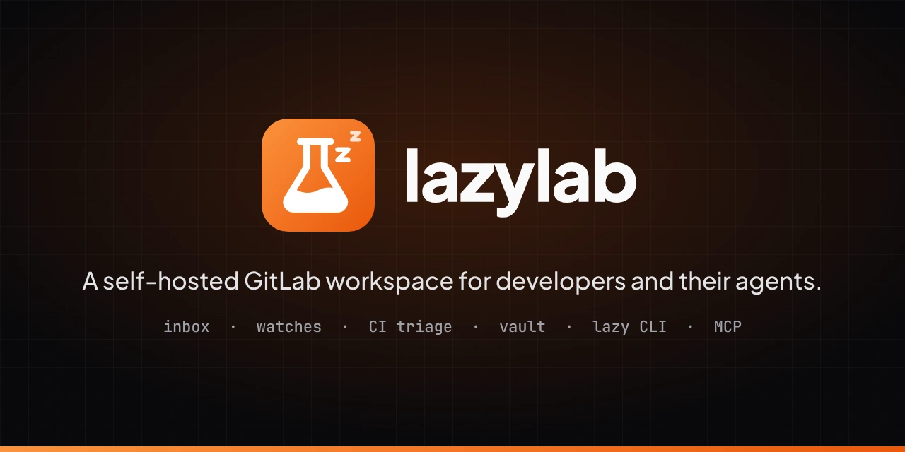

- Flask
- The lab: GitLab, and a workbench that runs on your own machine.
- zz
- The lazy: lazylab watches pipelines, tokens and merge requests so you do not have to, and tells you when something needs you.
- Ember tile
- Continues the orange accent of the app and the earlier
lzbadge. - Wordmark
- Lowercase
lazylabin Plus Jakarta Sans ExtraBold, tracked -2 %, as outlines.
Brand kit
The lazylab logo, colours and type, the rules for using them, and where each file is used in this repository.
The idea
Logo files
Use SVG wherever it is accepted. PNG and WebP are exports of the same artwork.










The whole kit on one sheet: brandkit.svg (webp).


Clear space and size
¼¼
16
24
32
64
96
Colour
Ember carries the brand, Ink and Paper carry the interface, and Pass, Fail and Wait are reserved for status. Click a swatch to copy its hex value. The values come from tokens.css.
Type
Aa lazylab
Plus Jakarta Sans 400 to 800 for the interface, headings and the wordmark.
$ lazy push --detach
JetBrains Mono 400 to 600 for code, the CLI, ids and hashes.
Usage
Do
- Use the files as supplied, scaled proportionally.
- Use the light logo on light backgrounds and the dark logo on dark ones.
- Use a one-colour mark when the tile would sit on orange or on a busy image.
- Write the name in lowercase:
lazylab, and the CLI aslazy.
Do not
- Recolour the tile or the flask, or swap the gradient direction.
- Stretch, rotate, outline or add shadows and glows to the mark.
- Set the wordmark in another font or capitalise it.
- Place the gradient tile on an ember background.
Where it is used
| Place | File | Copied to |
|---|---|---|
| App header and sign-in screen | svg/lazylab-mark.svg | src/assets/brand/ |
| App favicon and home-screen icon | svg/favicon.svg, png/apple-touch-icon.png | src/assets/brand/ |
| Docs header, favicon, link previews | svg/lazylab-mark.svg, svg/favicon.svg, png/lazylab-social.png | docs/src/assets/brand/ |
| README header | svg/lazylab-mark.svg | Linked from brandkit/ |
| GitLab project avatar | png/lazylab-mark-512.png (under GitLab's 200 KB limit) | Upload in Settings → General |
Rebuild the kit
Every file here is generated by build.mjs from the shapes and colours defined in it. Edit that file, never the outputs.
# Shell: bash, brandkit/ bun install && bun run setup # once: fonts, opentype.js, Playwright Chromium bun run build # writes svg/, png/, webp/, brandkit.svg, tokens.css and the copies